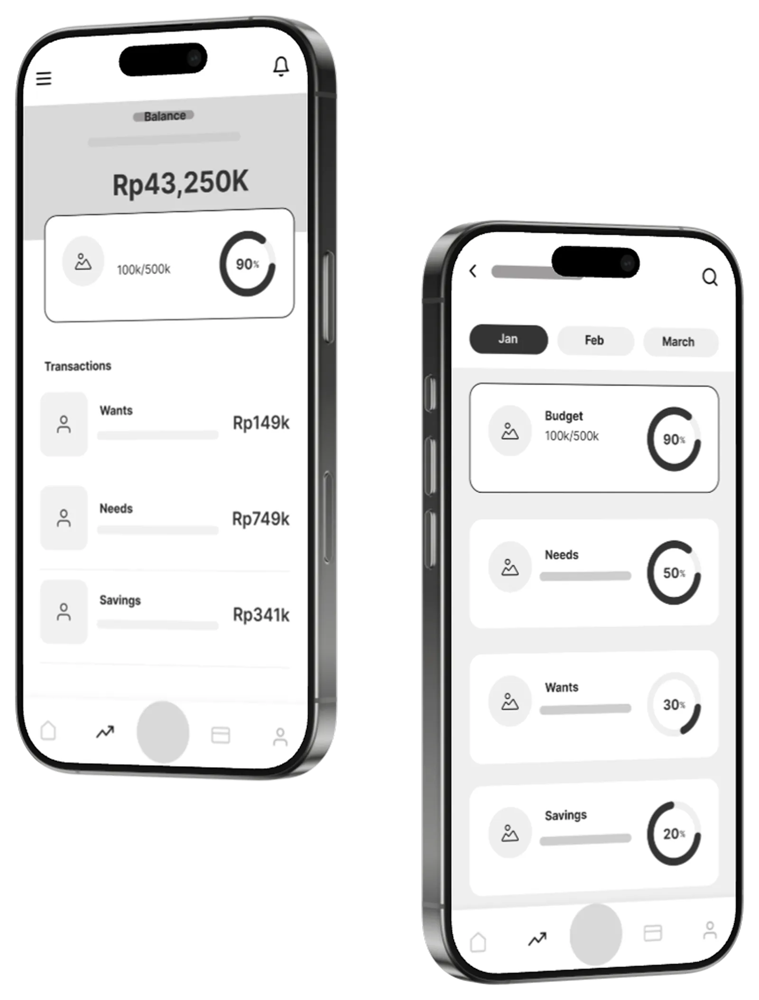
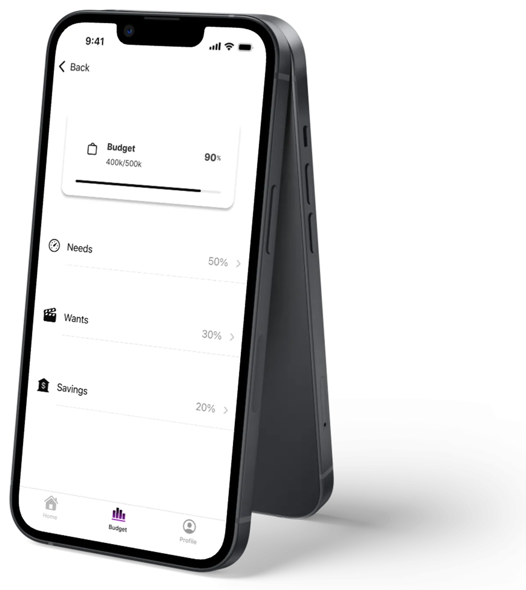

MoneyBud

Managing your finances can be overwhelming. MoneyBud makes budgeting simple, rewarding, and stress-free, with intuitive tools for setting budgets, monitoring spending, and celebrating savings milestones.
Budgeting has never been so fun. I can't believe I get rewarded for saving money.
— Felicia Levana
The problem
Problem statement
Many people struggle with impulsive spending and lack financial discipline, which makes saving difficult. My subject frequently overspent without a clear system, leaving savings goals out of reach.
The challenge: transform spending habits, helping users save consistently while making spending feel like a well-earned reward rather than a source of regret.
Habits & competitors
Background research
In-depth interviews revealed anxiety around spending, difficulty tracking expenses, and struggles saving for meaningful goals. The subject was frustrated with impulsive purchases and wanted a system that makes saving feel rewarding rather than restrictive.
User interviews
Structured interviews with people struggling with budgeting revealed common themes around the desire for simplicity, visual feedback, and positive reinforcement when achieving savings milestones.
Mint · YNAB · PocketGuardCompetitor analysis
Most offer expense tracking, budgeting categories and goal setting, but common pain points emerged: overwhelming interfaces, limited personalisation, and lack of positive reinforcement. That was the opportunity.
Sketch, then wireframe
Crazy 8sIdeate & brainstorm
I used the Crazy 8 technique to rapidly sketch user flows and features, prioritising ease of use, clear navigation, simple goal setting, visual progress tracking, and rewarding saving behaviour.
Lo-fi wireframes
Low-fidelity wireframes from the Crazy 8 session were used to quickly test user flows and assess usability before moving to high fidelity.

Usability testing
User testing
Participants set a goal, tracked expenses and viewed progress. Testing revealed confusion around navigation, unclear information hierarchy, and difficulty understanding the reward system. I refined the wireframes to make the savings experience more intuitive.
Built in Swift
High-fidelity prototype
After testing and approval, I enhanced the visual design following Apple's Human Interface Guidelines and translated it into a high-fidelity prototype built with Swift and Xcode.

This is my beginning.
This project was a transformative learning experience, taking me from user-centred design to hands-on app development. By understanding user needs, I crafted thoughtful solutions through research, sketching, and prototyping.
Learning Xcode and Swift challenged me to turn concepts into a working product for the first time, strengthening both my design thinking and technical skills.